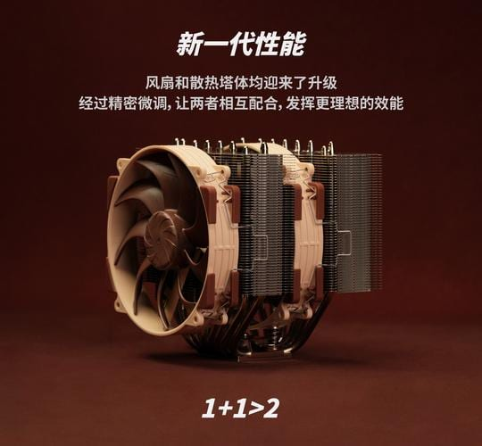

猫头鹰 NH-D15

风冷散热器的十年标杆，双塔六热管配两把 14cm 静音风扇，散热与静音双双登顶，做工与扣具体验一流，是高端风冷的不二之选。
客观评测
NH-D15 采用双塔六热管设计，配两把 140mm NF-A15 PWM 风扇，整机高度约 165mm，官方 TDP 支持约 250W 以上，实测压制 i9/R9 级别处理器满载温度表现接近 240 一体水冷。SecuFirm2 扣具系统安装便捷且压力均匀，附赠 NT-H1 硅脂。前风扇支持上移以避让高马甲内存，兼容性设计细致。6 年质保与长期配件供应保障了使用寿命。
主观点评
NH-D15 是风冷信仰的图腾，从开箱那一刻就能感受到什么叫旗舰做工——散热塔镀镍细腻，风扇质感扎实。安装过程是所有散热器里最愉悦的，扣具逻辑清晰，螺丝手感顺滑。运行时即使满载也只有一阵轻柔的风声，夜里几乎察觉不到。它的问题只有价格和体积，但一台机器用五六年，这份体验平摊下来其实很划算。
优点与不足
- 散热与静音双双顶级，压旗舰 U 无压力
- SecuFirm2 扣具安装体验业内标杆
- 六年质保，配件生态完善
- 价格昂贵，体积庞大
- 165mm 高度与双塔宽度挑剔机箱与内存
参数规格
| 类型 | 双塔双风扇风冷散热器 |
|---|---|
| 热管 | 6×6mm 热管 |
| 尺寸 | 约 165×150×161mm（含风扇） |
| 风扇 | 2×140mm NF-A15 PWM（约 1500RPM） |
| 风量/风压 | 约 82CFM / 1.51mmH2O（单扇） |
| 噪音 | 约 24.6dB（满速单扇） |
| TDP 支持 | 约 250W+ 级别 |
| 平台 | Intel LGA1700/1200/2066、AMD AM4/AM5 |
| 重量 | 约 1320g（含风扇） |
| 内存兼容 | 前风扇可上移避让高马甲内存 |
| 附件 | NT-H1 硅脂 + SecuFirm2 扣具 |
| 质保 | 6 年质保 |